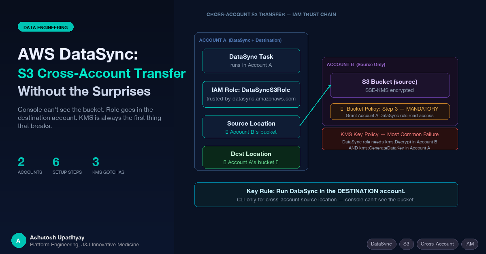

The console can't see the bucket. The role needs to be in the destination account. KMS is almost always the first thing that breaks. Here's the complete playbook.
AWS DataSync handles large-scale S3 data movement with scheduling, incremental sync, and data verification built in. For a one-off copy, aws s3 sync is fine. DataSync earns its place when you need reliable, repeatable transfers — especially across account boundaries — without homegrown retry logic and CloudWatch dashboards you had to build yourself.
The same-account setup is simple. The cross-account setup has three non-obvious requirements that nobody mentions together: the role must live in the destination account, the source bucket needs its own bucket policy, and the console can't be used to create cross-account locations. This post walks both setups end-to-end.
aws s3 syncFor ongoing transfers between two S3 locations, DataSync provides capabilities that a script wrapping the CLI cannot easily replicate:
If you're running a scheduled nightly copy from one bucket to another, DataSync is significantly less code to maintain than a custom solution. The cross-account capability is what makes it particularly useful in multi-account AWS organizations.
For same-account transfers, the setup is three objects: an IAM role, a source location, and a destination location — linked together in a task.
DataSync needs a role it can assume. The trust policy should always include aws:SourceAccount and aws:SourceArn conditions, even for same-account setups. These conditions guard against the confused-deputy problem — without them, any DataSync task in any account could theoretically assume the role if they obtained the ARN.
{
"Version": "2012-10-17",
"Statement": [
{
"Effect": "Allow",
"Principal": {
"Service": "datasync.amazonaws.com"
},
"Action": "sts:AssumeRole",
"Condition": {
"StringEquals": {
"aws:SourceAccount": "ACCOUNT_ID"
},
"ArnLike": {
"aws:SourceArn": "arn:aws:datasync:REGION:ACCOUNT_ID:*"
}
}
}
]
}aws iam create-role \
--role-name DataSyncS3Role \
--assume-role-policy-document file://trust-policy.jsonThe permissions policy needs read access to the source bucket and read-write access to the destination bucket. For same-account, both references use the same account ID:
{
"Version": "2012-10-17",
"Statement": [
{
"Sid": "SourceBucketRead",
"Effect": "Allow",
"Action": [
"s3:GetObject",
"s3:GetObjectVersion",
"s3:GetObjectTagging",
"s3:ListMultipartUploadParts"
],
"Resource": "arn:aws:s3:::SOURCE-BUCKET/*"
},
{
"Sid": "SourceBucketList",
"Effect": "Allow",
"Action": [
"s3:ListBucket",
"s3:GetBucketLocation",
"s3:ListBucketMultipartUploads"
],
"Resource": "arn:aws:s3:::SOURCE-BUCKET"
},
{
"Sid": "DestBucketWrite",
"Effect": "Allow",
"Action": [
"s3:GetObject",
"s3:GetObjectVersion",
"s3:GetObjectTagging",
"s3:PutObject",
"s3:PutObjectTagging",
"s3:DeleteObject",
"s3:ListMultipartUploadParts",
"s3:AbortMultipartUpload"
],
"Resource": "arn:aws:s3:::DEST-BUCKET/*"
},
{
"Sid": "DestBucketList",
"Effect": "Allow",
"Action": [
"s3:ListBucket",
"s3:GetBucketLocation",
"s3:ListBucketMultipartUploads"
],
"Resource": "arn:aws:s3:::DEST-BUCKET"
}
]
}aws iam put-role-policy \
--role-name DataSyncS3Role \
--policy-name DataSyncS3Access \
--policy-document file://permissions.jsonFor same-account, you can now create the source and destination locations through the DataSync console — it can enumerate your S3 buckets in the same account without any additional configuration.
AWS documents two topologies for cross-account DataSync. We use and document the destination-account-driven approach here — task and IAM role in Account A (the receiving account) — because it avoids a mandatory extra step that the source-account-driven approach requires (disabling ACLs on the destination bucket). Both topologies work; the tradeoff is covered in the gotcha table below.
In the destination-account topology: DataSync uses the IAM role in the account where the task runs. The task runs in Account A, the role is in Account A, and that single role handles both the source location (Account B's bucket) and the destination location (Account A's bucket).
Account A (DataSync + Destination) Account B (Source) ┌──────────────────────────────────┐ ┌────────────────────────────┐ │ DataSync Task │ │ S3 Bucket (source) │ │ ├─ Source Location ───────────┼─────▶│ Bucket Policy │ │ │ (points to B's bucket) │ │ grants Account A │ │ │ │ │ DataSync role access │ │ └─ Destination Location │ └────────────────────────────┘ │ (A's bucket) │ │ │ │ IAM Role: DataSyncCrossAcctRole │ │ (assumed by datasync.amazonaws.com) └──────────────────────────────────┘
Topology shown: task and role run in Account A (destination). AWS also documents a source-account-driven topology (task in Account B) — that approach requires disabling ACLs on Account A's destination bucket to ensure Account A owns the transferred objects.
Same trust policy as same-account, but with Account A's ID:
aws iam create-role \
--role-name DataSyncCrossAcctRole \
--assume-role-policy-document file://trust-policy.jsonThe permissions policy now references Account B's bucket for the source actions and Account A's bucket for the destination actions. The key difference: the source bucket ARN does not include an account ID — S3 bucket ARNs are globally unique by name, not by account.
{
"Version": "2012-10-17",
"Statement": [
{
"Sid": "SourceBucketAccountB",
"Effect": "Allow",
"Action": [
"s3:GetObject",
"s3:GetObjectVersion",
"s3:GetObjectTagging",
"s3:ListMultipartUploadParts"
],
"Resource": "arn:aws:s3:::ACCOUNT-B-SOURCE-BUCKET/*"
},
{
"Sid": "SourceBucketListAccountB",
"Effect": "Allow",
"Action": [
"s3:ListBucket",
"s3:GetBucketLocation",
"s3:ListBucketMultipartUploads"
],
"Resource": "arn:aws:s3:::ACCOUNT-B-SOURCE-BUCKET"
},
{
"Sid": "DestBucketAccountA",
"Effect": "Allow",
"Action": [
"s3:GetObject",
"s3:GetObjectVersion",
"s3:GetObjectTagging",
"s3:PutObject",
"s3:PutObjectTagging",
"s3:DeleteObject",
"s3:ListMultipartUploadParts",
"s3:AbortMultipartUpload"
],
"Resource": "arn:aws:s3:::ACCOUNT-A-DEST-BUCKET/*"
},
{
"Sid": "DestBucketListAccountA",
"Effect": "Allow",
"Action": [
"s3:ListBucket",
"s3:GetBucketLocation",
"s3:ListBucketMultipartUploads"
],
"Resource": "arn:aws:s3:::ACCOUNT-A-DEST-BUCKET"
}
]
}This step is the one most commonly skipped — and without it, you get AccessDenied regardless of what your IAM policy in Account A says. S3 cross-account access requires both the identity policy (in Account A) and the resource policy (the bucket policy in Account B) to allow the access. Neither alone is sufficient.
Run this with Account B credentials:
{
"Version": "2012-10-17",
"Statement": [
{
"Sid": "AllowDataSyncFromAccountA",
"Effect": "Allow",
"Principal": {
"AWS": "arn:aws:iam::ACCOUNT-A-ID:role/DataSyncCrossAcctRole"
},
"Action": [
"s3:GetObject",
"s3:GetObjectVersion",
"s3:GetObjectTagging",
"s3:ListMultipartUploadParts",
"s3:ListBucket",
"s3:GetBucketLocation",
"s3:ListBucketMultipartUploads"
],
"Resource": [
"arn:aws:s3:::ACCOUNT-B-SOURCE-BUCKET",
"arn:aws:s3:::ACCOUNT-B-SOURCE-BUCKET/*"
]
}
]
}# Run with Account B credentials
aws s3api put-bucket-policy \
--bucket ACCOUNT-B-SOURCE-BUCKET \
--policy file://source-bucket-policy.jsonThe DataSync console cannot enumerate buckets in Account B — it only lists buckets visible to the current account's credentials. For cross-account source locations, the CLI is the only reliable path:
aws datasync create-location-s3 \
--s3-bucket-arn "arn:aws:s3:::ACCOUNT-B-SOURCE-BUCKET" \
--s3-config '{"BucketAccessRoleArn":"arn:aws:iam::ACCOUNT-A-ID:role/DataSyncCrossAcctRole"}' \
--subdirectory "/optional/prefix" \
--region REGIONSave the returned LocationArn as SOURCE_LOCATION_ARN.
The destination is in Account A — you can use the console or CLI:
aws datasync create-location-s3 \
--s3-bucket-arn "arn:aws:s3:::ACCOUNT-A-DEST-BUCKET" \
--s3-config '{"BucketAccessRoleArn":"arn:aws:iam::ACCOUNT-A-ID:role/DataSyncCrossAcctRole"}' \
--region REGIONaws datasync create-task \
--source-location-arn "SOURCE_LOCATION_ARN" \
--destination-location-arn "DEST_LOCATION_ARN" \
--name "CrossAccountCopy" \
--options '{
"VerifyMode":"ONLY_FILES_TRANSFERRED",
"OverwriteMode":"ALWAYS",
"PreserveDeletedFiles":"PRESERVE"
}' \
--region REGION
# Start it
aws datasync start-task-execution \
--task-arn "TASK_ARN" \
--region REGION
# Monitor
aws datasync describe-task-execution \
--task-execution-arn "TASK_EXECUTION_ARN" \
--region REGIONIf either bucket uses SSE-KMS encryption, the IAM policy alone is not sufficient — you must also update the KMS key policies in the relevant accounts. This is the most common failure point in cross-account DataSync setups, and the error message is a generic AccessDenied that doesn't mention KMS.
The DataSync role in Account A needs kms:Decrypt and kms:DescribeKey added to Account B's KMS key policy:
{
"Sid": "AllowDataSyncRoleDecrypt",
"Effect": "Allow",
"Principal": {
"AWS": "arn:aws:iam::ACCOUNT-A-ID:role/DataSyncCrossAcctRole"
},
"Action": [
"kms:Decrypt",
"kms:DescribeKey"
],
"Resource": "*"
}The DataSync role needs kms:GenerateDataKey, kms:Encrypt, and kms:Decrypt on Account A's KMS key. This is an identity-based permission (IAM policy) or a key policy addition — either works for same-account keys:
{
"Effect": "Allow",
"Action": [
"kms:GenerateDataKey",
"kms:Encrypt",
"kms:Decrypt",
"kms:DescribeKey"
],
"Resource": "arn:aws:kms:REGION:ACCOUNT-A-ID:key/KEY-ID"
}KMS is a two-layer permission system. For cross-account KMS access, both the IAM policy on the role AND the KMS key policy in the target account must allow the operation. IAM alone is insufficient for cross-account key usage. Expect AccessDenied on your first run if either bucket is KMS-encrypted and you haven't updated the key policy.
The --options parameter on create-task controls transfer behavior. The defaults are not always what you want:
| Option | Recommended Value | When to Change |
|---|---|---|
VerifyMode |
ONLY_FILES_TRANSFERRED |
Use POINT_IN_TIME_CONSISTENT for full integrity checks; NONE to skip verification entirely and maximize throughput |
OverwriteMode |
ALWAYS |
Use NEVER if you don't want to overwrite objects that have changed at the destination |
PreserveDeletedFiles |
PRESERVE |
Change to REMOVE only if you want the destination to mirror the source including deletions |
TransferMode |
CHANGED |
Use ALL to force retransfer of all files regardless of whether they changed |
| # | Gotcha | Consequence | Fix |
|---|---|---|---|
| 1 | Console can't see cross-account buckets | You can't create the source location through the UI | Use aws datasync create-location-s3 CLI command |
| 2 | Bucket policy on source is mandatory | AccessDenied even with correct IAM policy | Add bucket policy in Account B granting the Account A role access |
| 3 | KMS requires key policy updates | Generic AccessDenied with no KMS mention | Update key policies in both accounts for encrypted buckets |
| 4 | Missing confused-deputy conditions | Any DataSync task could assume the role | Always include aws:SourceAccount + aws:SourceArn in trust policy |
| 5 | Cross-region transfers add data transfer cost | Unexpected AWS bill line items | Use same region where possible; account for transfer charges if not |
Object ownership — destination-account topology: When DataSync in Account A writes to Account A's bucket using Account A's role, Account A automatically owns the objects. Ownership follows from which account's role performed the write — no ACL configuration needed.
Source-account topology note: In AWS's alternative documented pattern (task and role in Account B, the source), the role writes into Account A's bucket from Account B's credentials. In that case, Account B would own the transferred objects by default — to make Account A own them, you must disable ACLs on Account A's destination bucket first (S3 Object Ownership → Bucket owner enforced). AWS lists this as a required step in their cross-account DataSync tutorial.
aws:SourceAccount and aws:SourceArn conditions in the trust policy to prevent the confused-deputy problem — even for same-account setups.VerifyMode: ONLY_FILES_TRANSFERRED is the pragmatic default — verify what you moved without the cost of re-reading everything already at the destination.